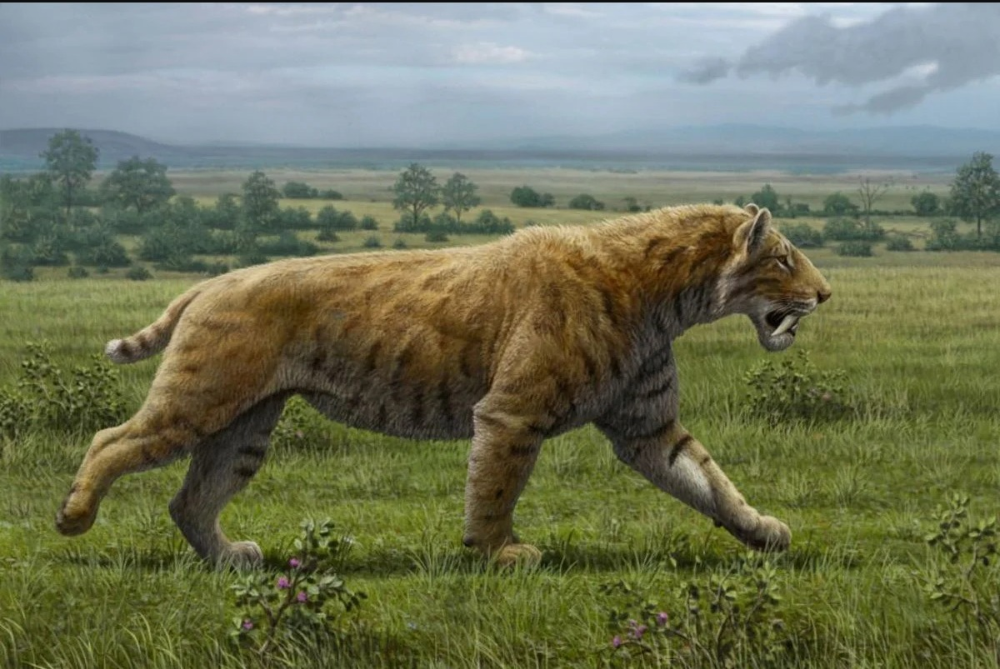

O que era o tigre-dentes-de-sabre?
O Smilodon foi um mamífero carnívoro pré-histórico conhecido por seus enormes dentes caninos. Apesar do apelido, ele não era um tigre verdadeiro.
Esse animal viveu durante o Pleistoceno, período marcado por grandes mudanças climáticas e pela presença de muitos animais gigantes.

Principais características
O Smilodon possuía características físicas impressionantes:
- Dentes caninos superiores muito compridos.
- Corpo forte e musculoso.
- Membros anteriores robustos.
- Alimentação carnívora.
Curiosidades
Confira algumas curiosidades sobre esse animal:
- Seus fósseis foram encontrados nas Américas.
- Existiram diferentes espécies de Smilodon.
- Ele foi extinto há milhares de anos.
Para descobrir mais sobre sua história, acesse a página Sobre.